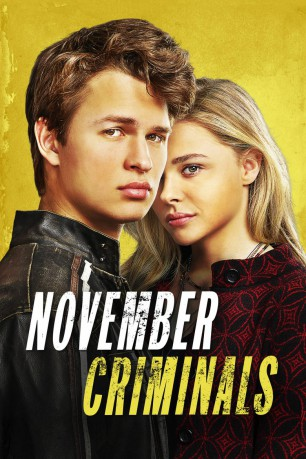
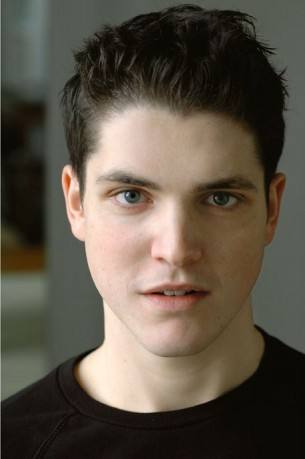
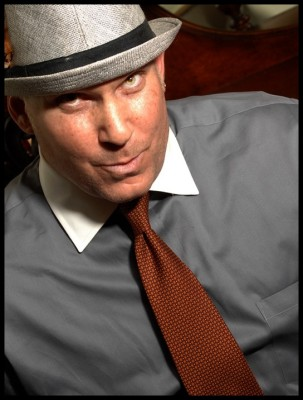
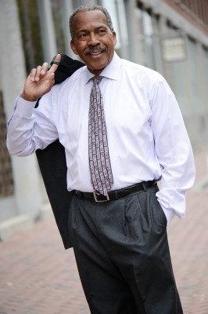

#8072 November Criminals
 
 IMDB-Wertung: 5.3 / 10
IMDB-Wertung: 5.3 / 10  Metascore: 31
Metascore: 31 
Washington D.C.: Der 18-jährige Addison Schacht ist ein Teenager eher rebellischer Natur. Gerade hat er den Abschluss an seiner jüdischen Highschool geschafft. Nun soll er sich für die Universität in Chigaco bewerben, um Altphilologie zu studieren. Beim Schreiben seiner Bewerbung zum Thema “Was sind deine besten und schlechtesten Qualitäten?” stellt Addison allerdings fest, dass er nur schlechte Eigenschaften hat: In seinem letzten Schuljahr hat er mit Drogen gedealt, beleidigende Witze über seine Mitschüler gesammelt und Lehrer und Eltern beleidigt. Als allerdings Kevin Broadus, mit dem Addison zusammen zur Schule gegangen ist, in einer sinnlosen Schießerei getötet wird, beginnt der Rebell auf eigene Faust zu ermitteln. Zusammen mit Phoebe verstrickt er sich immer weiter in die Untersuchung der Umstände, die in der Unterwelt von Washington D.C. zum Tod seines ehemaligen Mitschülers geführt haben.
Jahr: 2017
Dauer: 85 Minuten
FSK: 12
Land: USA Studio: SPWATonspuren: DTS - ,
Untertitel: Deutsch, Englisch,
Auflösung: 1080p (1920x1080) Größe: 8335 MB
Genre: Drama, Krimi, Mystery
Regisseur: Sacha Gervasi
Drehbuch: Steven Knight
Soundtrack: David Norland
Darsteller:
- Chloë Grace Moretz als Phoebe
 Ansel Elgort als Addison Schacht
Ansel Elgort als Addison Schacht Catherine Keener als Fiona
Catherine Keener als Fiona David Strathairn als Theo Schacht
David Strathairn als Theo Schacht Terry Kinney als Principal Karlstadt
Terry Kinney als Principal Karlstadt Cory Hardrict als D Cash
Cory Hardrict als D Cash Victor Williams als Mr. Broadus
Victor Williams als Mr. Broadus- Danny Flaherty als Noel
- Allie Marshall als Cafe Patron
 Tessa Albertson als Alex Faustner
Tessa Albertson als Alex Faustner-  Philip Ettinger als Mike Lorriner
- Gianni Paolo als Addison's Friend
-  Mickey Gilmore als Police Officer
- Karina Deyko als Sarah Schact
 Leah Procito als Funeral Mourner
Leah Procito als Funeral Mourner- Tanja Melendez Lynch als House Party Guest
- Paul Nobrega als Guy Apriel
 Brianne Brozey als Walla
Brianne Brozey als Walla- Jared Kemp als Kevin
 Adrian M. Mompoint als Bo
Adrian M. Mompoint als Bo- London Hall als Garden Party Guest
- Macayla Botelho als High School Student
- Jimi Stanton als Brandon
 David Boston als Coroner
David Boston als Coroner- Noel Ramos als Officer N. Ball
- Elaine Victoria Grey als Garden Party Guest
- Rena Maliszewski als Reporter
- Richard Pacheco als Drug Dealer
- Gillian Mariner Gordon als Girl
- Michael Christoforo als Cameraman
 Bruce-Robert Serafin als Bartender
Bruce-Robert Serafin als Bartender- Amy Whalen als Pedestrian
- Eddie Resendes als Student
- K.C. Faldasz als Car Kicker
- Mariela Hill als Five Star Manager
- Jim Patton als Bar Fly
- Cassidy Neal als Officer Graveline
-  Jim Boyd als TV Reporter (uncredited)
- Eric Perdomo als High School Student (uncredited)
 Joseph Oliveira als Officer
Joseph Oliveira als Officer- Devin Scott Washington als High School Student
- Hashim Lafond als Drug Dealer
- Jed Griswold als PartyAttendee (BG)
- Danielle Rouleau als High School Student
- Christopher Alan als Teacher
- Lino Tanaka als Teacher
- Pamela Lambert als Mrs. Rowena Strauss
- Dora Winifred als High School Student
- Alexandra Smith als High School Student
- Paul Taft als Ch. 13 News Cameraman
Datei: X:\2017(N-Z)\November Criminals (2017, FSK12, 1920x1080).mkv seit 21.01.2018
Festplatte: HD 2017(A-Z)-2018(A-F)
 Es gibt insgesamt 170 Filme in der Gruppe '2017(N-Z)'
Es gibt insgesamt 170 Filme in der Gruppe '2017(N-Z)'